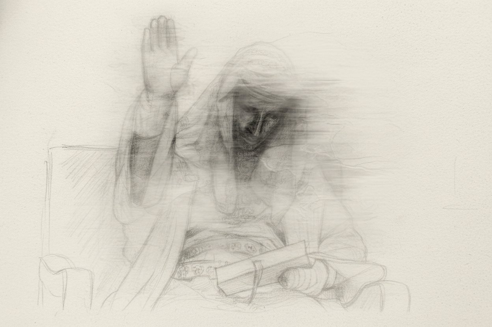

The First Drop Couldn't Be About Anything Ordinary. It had to be about the thing that actually matters - what happens to a person when everything is working against them, and they keep going anyway.
The Figure

In 12th century Jerusalem, a king ruled with a face no one could see.
Baldwin IV was thirteen years old when his tutor noticed something wrong with his right arm. He couldn't feel pain in his hand. The diagnosis came quickly - leprosy. A disease that in that era didn't just attack the body. It attacked your identity, your legitimacy, your right to lead.
He became king at fifteen. Let that land for a moment. Fifteen years old. A deteriorating body. A kingdom surrounded by enemies. An era that viewed his condition as a mark of divine disfavour. Every reason to step back, hand over the crown, accept a quiet end. He didn't.
The Battle
In November 1177, Saladin's forces - vastly superior in number - moved to take Jerusalem. Baldwin IV rode out to meet them. He was eighteen. His hands were already damaged. He rode with a small force against an army that had every tactical advantage.
At Montgisard, his forces routed Saladin's army in one of the most unlikely victories of the Crusader period. A young king, in a failing body, on the right side of an impossible moment. His weakness was never the final word.
"My grace is sufficient for you, for my power is made perfect in weakness."- 2 Corinthians 12 : 9
Paul wrote those words from a place of his own suffering - a thorn he begged God to remove. The answer he received wasn't removal. It was sufficiency. The grace to endure. The strength that only comes through the thing you couldn't escape. Baldwin lived that before he ever read it.
The Piece
420-460gsm. Drop shoulder. Deep true black.
The Baldwin figure carries the print - illustrated, raw, unmistakable. One hand raised. Robes heavy. A man in the middle of something - not at the end of it.
Above the figure: SET APART
Below it: IN WEAKNESS I AM STRONG
At the base: ZEDOREY - VOL. I - II COR XII IX
The back tells the story. The chest stays clean.
Why Limited
Vol. I is numbered. No restocks. No discounts. No exceptions. When it's gone, it belongs to the people who were ready. That's not a marketing line. That's just how this works.